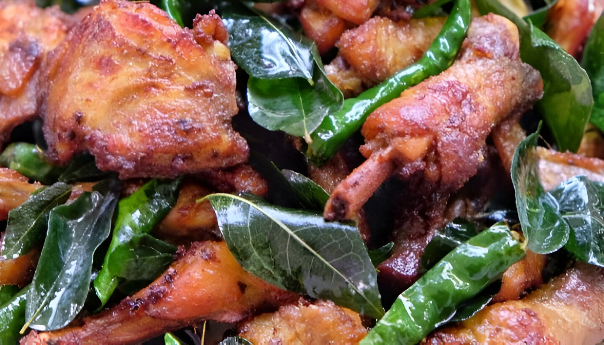
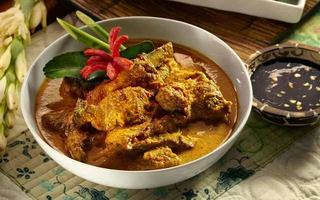
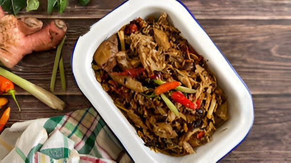

Sayur khas Aceh berbahan dasar ampas kelapa yang sudah difermentasi (pliek u), dicampur dengan berbagai sayuran seperti daun melinjo, kacang panjang, dan terong.

Ayam Tangkap
Makanan
Ayam goreng khas Aceh yang disajikan dengan daun kari goreng, daun pandan, dan rempah-rempah lainnya yang memberikan aroma wangi dan rasa gurih.

Gulai Kambing
Makanan
Olahan daging kambing dalam kuah kari kental yang dimasak dengan bumbu rempah-rempah khas seperti kapulaga, kayu manis, dan cengkeh.

Eungkot Keumamah
Gunung
Ikan tongkol yang dikeringkan, lalu dimasak kembali dengan santan dan bumbu rempah khas Aceh